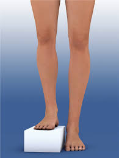
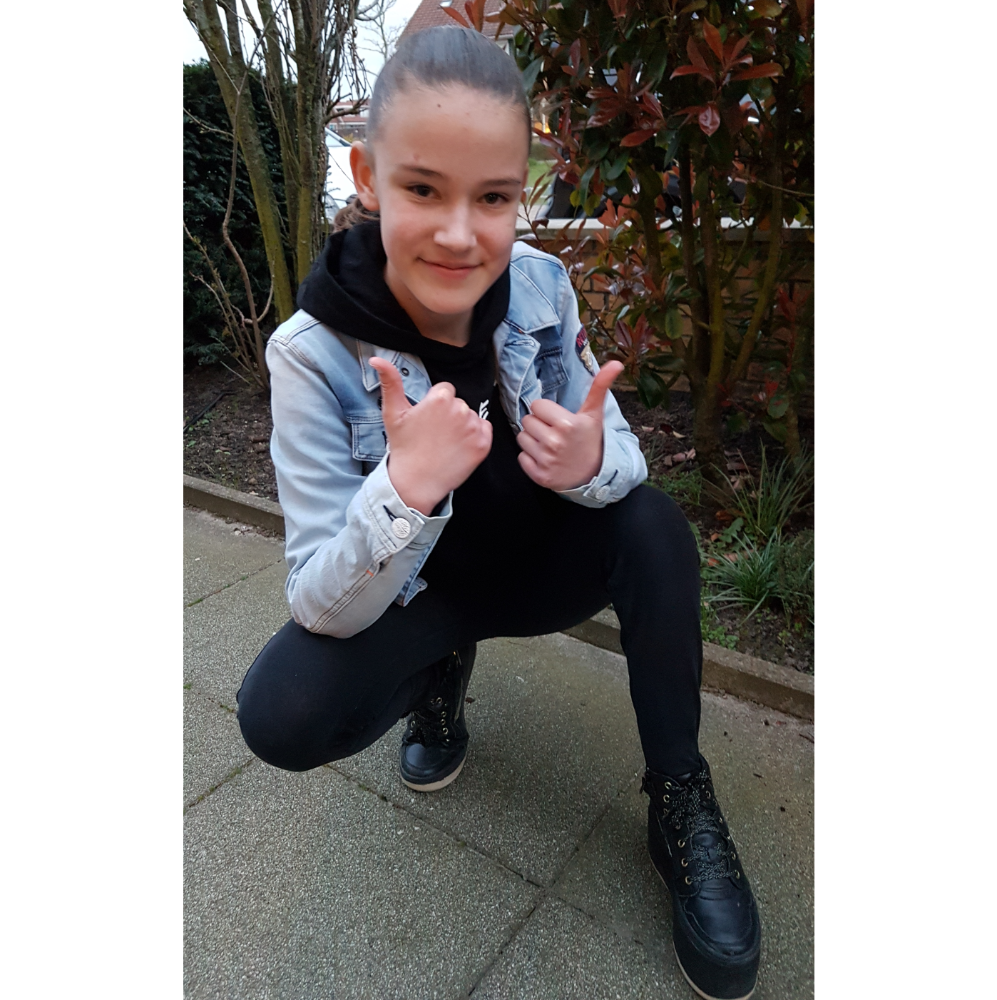

Informatie
Wat is beenverlenging?
Een beenlengteverschil onstaat door een groeistoornis bij een kind of op latere leeftijd door een ongeluk of infectie. Als er niets aan het beenlengteverschil wordt gedaan, kan dit leiden tot amputatie van het been als het kind is uitgegroeid.
Een beenverlenging zorgt er tijdens de groei voor, dat op een natuurlijke wijze het been langer wordt. Het wordt toegepast bij een beenlengteverschil van meer dan 3 cm, waarbij er rekening wordt gehouden met de groei van het kind.
Het boven- en/of onderbeen kan langer worden gemaakt met een frame of door middel van een verwijderbare verlengingspin. Een beenverlenging is zowel voor de ouders als het kind een ingrijpende behandeling, die behoorlijke gevolgen heeft.
Over mij
Mijn verhaal
Hoi, ik ben Malena. Ik ben geboren met het FFU-syndroom. Dit houdt in dat ik met een korter been ben geboren. Bij mijn geboorte was mijn beenlengteveschil al 6 cm. Als hier niets aan gedaan zou worden, dan zou het beenlengteverschil 30 cm zijn als ik uitgegroeid zou zijn.
Om het beenlengteverschil op te lossen tot mijn 7e jaar, heeft de arts in Rijndam een orthopedische schoen aangemeten. Deze schoen werd aangepast naarmate ik groter werd.
Op mijn 7e jaar zijn we gestart met mijn 1e beenverlenging. Toen begon voor mij een hele spannende periode met veel heuvels en dalen.
Lees verderDit ben ik

Het komt goed!